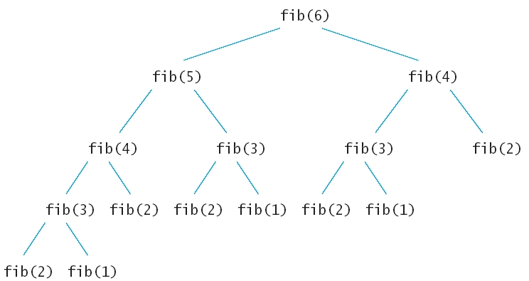

Редица на
Фибоначи (Уикипедия)
(Wikipedia)
(YouTube)
1, 1, 2, 3, 5, 8, 13, 21, 34, 55, 89, ...
int fib(int n)
{ cout << "Entering fib: n = " << n << "\n";
int f;
if (n <= 2) f = 1;
else f = fib(n - 1) + fib(n - 2);
cout << "Exiting fib: n = " << n
<< " return value = " << f << "\n";
return f;
}
int fib(int n)
{ if (n <= 2) return 1;
int fold = 1;
int fold2 = 1;
int fnew;
for (int i = 3; i <= n; i++)
{ fnew = fold + fold2;
fold2 = fold;
fold = fnew;
}
return fnew;
}
** Най-голям общ делител [1.2.3]
* Алгоритъм на Евклид за намиране на най-голям общ делителunsigned
gcd1(unsigned a, unsigned b)
{ unsigned swap;
while (b > 0) { swap = b; b =
a%b; a = swap; }
return a;
}
unsigned
gcd2(unsigned a, unsigned b)
{ return (0 == b) ? a : gcd2(b, a%b); }
int main()
{ const unsigned a = 1, b = 125;
cout << gcd1(a, b) <<
endl;
cout << gcd2(a, b) <<
endl;
return 0;
}
* Да се напише метода само с изваждане.
void
printN(unsigned n)
{ if (n >= 10) printN(n/10);
cout << n%10;;
}
int main()
{ unsigned m = 1234;
printN(m);
return 0;
}
* Пресмятане на n! и изследване на ефективността на реализациите [1.2.5]
/* Два варианта за пресмятане на n! [1.2.5] */unsigned k = 0;
void printRed2(unsigned long res)
{ k++;
cout << res << " ";
if (k < n) printRed2(res*10);
cout << res << " ";
}
unsigned
long res = 1;
void printRed3()
{ k++;
res *= 10;
cout << res << "
";
if (k < n)
printRed3();
cout << res << "
";
res /= 10;
}
int main()
{
printRed1(1,10); cout << endl;
printRed2(10); cout << endl;
k = 0;
printRed3(); cout << endl;
return 0;
}
Тренинг 2:
- помощ за Тренинг 1 - програма за простите числа (демо)
- тестове за проверка (гранични случаи, специални случаи)
- четене на прости дроби (демо)